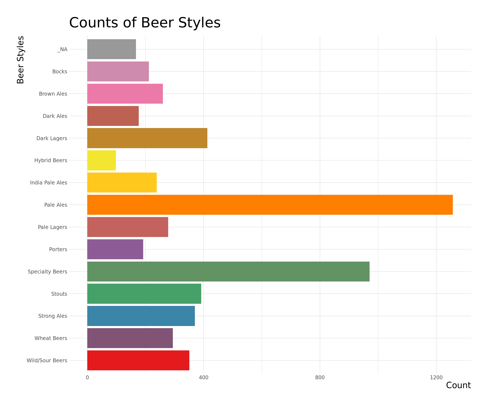
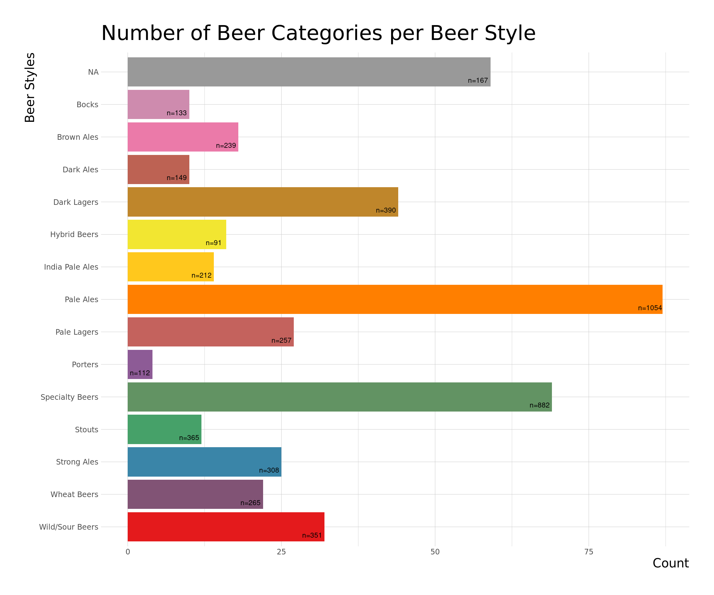
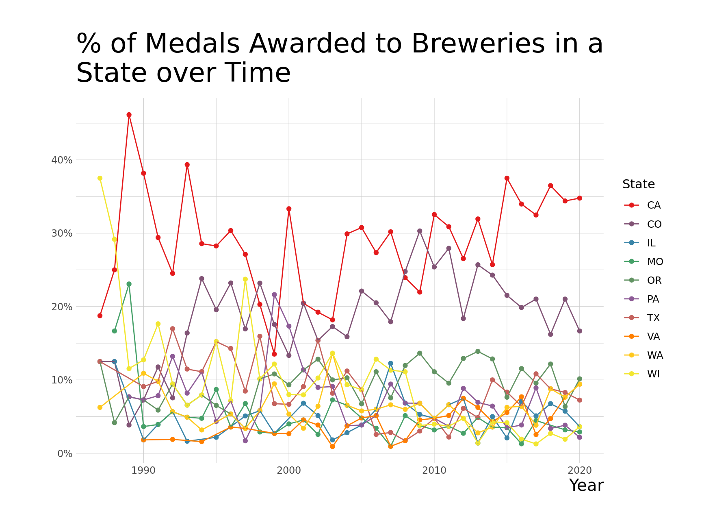
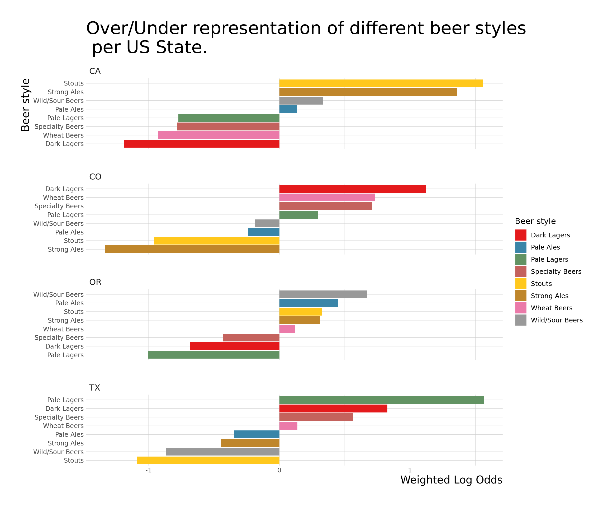
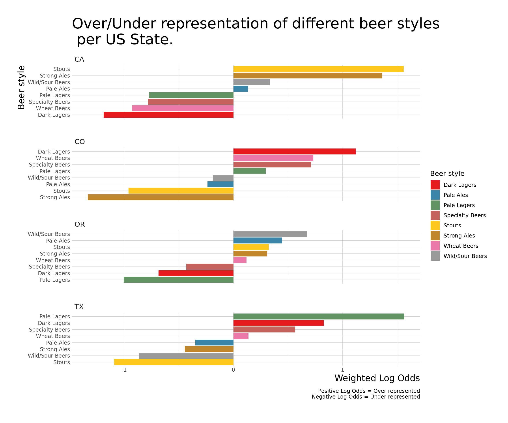

This week, we explore which beer styles and categories are are over/under represented in different states and over time.
library(tidyverse)
library(ggplot2)
library(fuzzyjoin)
library(stringdist)
library(tigris)
beer_styles <- read_csv("beer_styles.csv")
state_info <- fips_codes %>%
group_by(state) %>%
slice(1) %>%
select(state, state_name)
beer_awards <- readr::read_csv(
paste0("https://raw.githubusercontent.com/rfordatascience/tidytuesday/",
"master/data/2020/2020-10-20/beer_awards.csv")) %>%
mutate(brewery = str_replace(brewery, " Company", ""),
brewery = str_replace(brewery, " Co.", ""))
beers <- read_csv("beers.csv") %>%
select(-X1)
breweries <- read_csv("breweries.csv") %>%
mutate(name = str_replace(name, " Company", ""),
name = str_replace(name, " Co.", "")) %>%
inner_join(state_info, by="state")
beer_joined <- breweries %>%
inner_join(beers, by="brewery_id") %>%
rename(brewery_name = name.x,
beer_name = name.y) %>%
full_join(beer_awards,
by=c("city"="city",
"state"="state",
"brewery_name"="brewery",
"beer_name"="beer_name")) %>%
inner_join(state_info, by="state") %>%
mutate(state_name = if_else(is.na(state_name.x),
state_name.y, state_name.x)) %>%
select(-state_name.x, -state_name.y) %>%
rename(style2 = style)
beer_awards_joined <- beer_joined %>%
mutate(category = case_when(
is.na(category) & !is.na(style2) ~ style2,
is.na(category) & is.na(style2) ~ beer_name,
TRUE ~ category)) %>%
mutate(category = str_replace_all(category, "-", " "),
category = str_replace_all(category, "Ale, ", ""),
category = str_replace_all(category, "Lager, ", "")) %>%
select(-id, -style2) %>%
stringdist_left_join(beer_styles, by = c("category"="category")) %>%
mutate(category = str_to_lower(if_else(is.na(category.x), category.y, category.x))) %>%
select(-category.y, -category.x) %>%
mutate(category = case_when(
str_detect(category, "dry stout") &
!str_detect(category, "irish") ~ "dry stout",
str_detect(category, "foreign style|export") &
style == "Stouts" ~ "foreign style stout",
TRUE ~ category),
style = case_when(
str_detect(category, "brown") ~ "Brown Ales",
str_detect(category, "dark lager|o*tober|dark pils") ~ "Dark Lagers",
str_detect(category, "dark ale") ~ "Dark Ales",
str_detect(category, "gose|wild|fruit|brett|sour") ~ "Wild/Sour Beers",
str_detect(category, "wheat|style weisse") ~ "Wheat Beers",
str_detect(category, "cream") ~ "Hybrid Beers",
str_detect(category, "spice|special|alcoholic") ~ "Specialty Beers",
str_detect(category, "pils|bitter|amber ale|light lager|zwickelbier|helles") ~ "Pale Ales",
str_detect(category, "pale ale") & !str_detect(category, "india") ~ "Pale Ales",
str_detect(category, "strong ale") ~ "Strong Ales",
str_detect(category, "india pale ale") ~ "India Pale Ales",
TRUE ~ style)) %>%
filter(!((category == "American IPA") & (style == "American IPA"))) %>%
mutate(winner = !is.na(medal),
category = str_to_title(category)) %>%
filter(winner) %>%
distinct()There are 448 different categories with on average 11.1 beers in each category. With such a low sample size per category, the statistical power will be too low for most models especially for time series or geospatial models where we would additionally cut on year and state. This fact will come inhandly later in the analysis.
We can aggregate beer category to beer style as defined by Beer Advocate. This larger set of beers has only 15 different buckets and has on average 343.43 beers in each style.
beer_awards_joined %>%
mutate(style = if_else(is.na(style), " NA", style),
style = fct_reorder(style, desc(style))) %>%
filter(winner) %>%
count(style) %>%
ggplot() +
aes(y=style, x=n, fill=style) +
geom_col(position = "dodge") +
theme_ipsum_ps(axis_title_size = 15, plot_title_size = 25) +
labs(x = "Count", y = "Beer Styles", title = "Counts of Beer Styles for medal winners") +
theme(legend.position = "none") +
scale_fill_manual(values = getPalette(15))
One would imagine that different states may specialize in different categories or styles of beer. We can model this using Log Odds which creates a statistic of the strength of the relationship between two events. In our example, we might ask what beer categories are over/under represented in a given state. This may indicate a beverage specialization and perhaps a consumer preference for that state.
library(tidylo)
library(tidytext)
log_odds <- beer_awards_joined %>%
filter(fct_lump(category, 8) != "Other",
fct_lump(state, 4) != "Other") %>%
count(state, category, style) %>%
complete(state, category, fill = list(n=0)) %>%
bind_log_odds(state, category, n, uninformative = TRUE, unweighted = TRUE) %>%
mutate(category = reorder_within(category, log_odds_weighted, state),
style = if_else(is.na(style), "Bocks", style))
log_odds %>%
ggplot() +
aes(x=log_odds_weighted, y=category, fill=style) +
geom_col() +
scale_y_reordered() +
facet_wrap(~ state, nrow = 4, scale = "free_y") +
labs(y = "Beer Category", x = "Weighted Log Odds", fill = "Beer style",
title = "Over/Under representation of different beer categories\n per US State") +
theme_ipsum_ps(axis_title_size = 15, plot_title_size = 20) +
scale_fill_manual(values = getPalette(8))
Our analysis suggest that beer categories: Irish Dry and Imperial are more likely to come from California while Bock and (German/Bohemian) Pilseners are more likely to come from Colorado. Interestingly, some of the states have strong reversals in their log odds in comparison to other states suggesting states are specializing in thier beers.
We can also specifically look at beer styles to to check the robustness of the claim.
beer_awards_joined %>%
filter(fct_lump(state, 4) != "Other",
fct_lump(style, 8) != "Other") %>%
count(state, style) %>%
complete(state, style, fill = list(n=0)) %>%
bind_log_odds(state, style, n) %>%
mutate(style = reorder_within(style, log_odds_weighted, state),
beer_style = sub("__.*", "", style)) %>%
ggplot() +
aes(x=log_odds_weighted, y=style, fill=beer_style) +
geom_col() +
scale_y_reordered() +
facet_wrap(~ state, nrow = 4, scale = "free_y") +
labs(y = "Beer style", x = "Weighted Log Odds", fill = "Beer style",
title = "Over/Under representation of different beer styles\n per US State.") +
theme(text = element_text(size = 15)) +
theme_ipsum_ps(axis_title_size = 15, plot_title_size = 25) +
scale_fill_manual(values = getPalette(8))
Aggregating the data still shows evidence of beer specialization per state. Some aspects if the specialization claim was over stated as while California produces a lot of award winning Irish Dry and Imperial Stouts, Oregon still produces a wide range of award winning Stouts. However, other aspects of the specialization claim were understated as the weighted log odds Dark Largers are very positive in Colorado and Texas and are very negative in California and Oregon. This is without any over/under representation in any specific beer category.
We can also view this plot throughout the US as a proxy for specialization zones in the US.
library(geofacet)
beer_awards_joined %>%
filter(fct_lump(style, 8) != "Other") %>%
count(state, style) %>%
complete(state, style, fill = list(n=0)) %>%
bind_log_odds(state, style, n) %>%
mutate(style = reorder_within(style, log_odds_weighted, state),
beer_style = sub("__.*", "", style)) %>%
ggplot() +
aes(x=log_odds_weighted, y=reorder(beer_style, desc(beer_style)), fill=beer_style) +
geom_col() +
facet_geo(~ state, grid = "us_state_grid2") +
scale_y_reordered() +
theme_bw() +
scale_fill_manual(values = getPalette(8)) +
labs(x="Weighted Log-Odds", y="Beer Styles", fill="Beer Styles",
title = "Weighted Log-Odds of different Beer Styles throughout the US")
Lastly, we can regress number of specific beer style and year to see if any beer styles are becoming more popular.
library(broom)
by_year_style <- beer_awards_joined %>%
add_count(year, name = "year_total") %>%
count(style, year, year_total, sort = TRUE) %>%
mutate(pct_year = n / year_total)
over_under <- by_year_style %>%
group_by(style) %>%
summarize(model = list(glm(cbind(n, year_total - n) ~ year, family = "binomial"))) %>%
mutate(tidied = map(model, tidy, conf.int = TRUE)) %>%
unnest(tidied) %>%
filter(term == "year") %>%
mutate(p.value = format.pval(round(p.value, 2)),
style = fct_reorder(style, estimate))## `summarise()` ungrouping output (override with `.groups` argument)over_under %>%
ggplot() +
aes(x=estimate, y=style) +
geom_point(size=3) +
geom_vline(xintercept = 0, lty = 2) +
geom_errorbarh(aes(xmin = conf.low, xmax = conf.high), height = .1, size=1) +
theme_bw() +
labs(x = "Estimated slope",
title = "Which beers styles are increasingly winning more\n over time throughout the US?",
y = "") +
theme(text = element_text(size = 15)) +
theme_ipsum_ps(axis_title_size = 15, plot_title_size = 25)